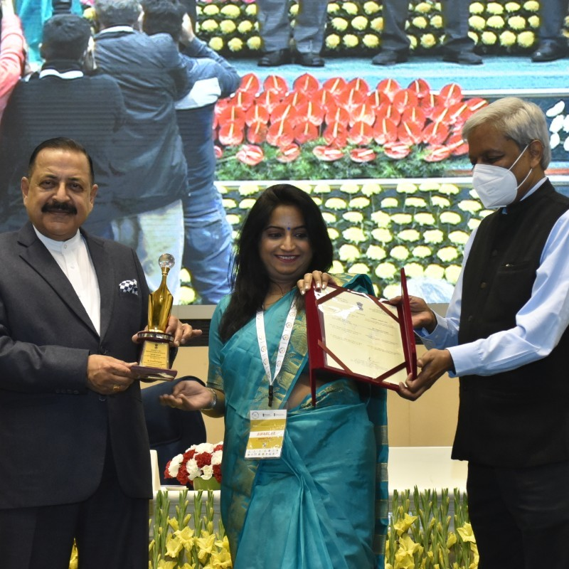

Computational Biology & Bioinformatics · Antimicrobial Resistance · Machine Learning

Dr. Deeksha Pandey
International Centre for Genetic Engineering and Biotechnology (ICGEB), New Delhi
I am a computational biologist with over 9 years of research experience focused on understanding and combating antimicrobial resistance (AMR) through cutting-edge bioinformatics and machine learning approaches.
I completed my Ph.D. in Computational Biology and Bioinformatics from the University of Delhi South Campus in March 2023 (Degree Awarded: 24 February 2024), under the supervision of Prof. Manish Kumar at the Bioinformatics & AI Lab. My doctoral work centred on the characterization and analysis of antimicrobial resistance using in-silico tools.
I am an active member of the Asia-Pacific Bioinformatics Network (APBioNET), BIOCLUES, BIDDS, and ESCMID. I serve as a Steering Committee Member at InCoB 2025 and as Editorial Board Member of BMC Microbiology (2025–Present).
DST, Govt. of India — "Computers and artificial intelligence as weapons against antimicrobial resistance"
Bill & Melinda Gates Foundation — 32nd European Congress of Clinical Microbiology, Lisbon, Portugal
1st Position, Banasthali Vidyapeeth, Jaipur
Department of Science & Technology, Govt. of India · 2016–2018
My work bridges computational methods with pressing challenges in infectious disease biology
Studying the evolution, spread, and molecular mechanisms of antibiotic resistance genes (ARGs) in ESKAPE pathogens and metagenomic datasets. Investigating OXA, AmpC, and other β-lactamases.
Developing ML-based computational tools for the identification, prediction, and characterization of antimicrobial-resistant proteins and genes in -omics datasets. Tools: BacEffluxPred, β-LacFamPred.
Molecular dynamics simulations and docking studies to investigate structural impacts of mutations — including DRD2 receptor (S311C mutation) and HIV-host protein interactions.
NGS-based metagenomic analysis for surveillance of antibiotic resistance gene diversity across clinical, environmental, and animal reservoirs using tools like BacARscan.
Investigating antiviral compounds like Remdesivir, Zidovudine, and Nevirapine against Chandipura virus through high-energy interaction analysis of the RdRp domain.
Investigated mutational landscape of microsatellite unstable cancers at Cancer Science Institute, NUS Singapore. Analyzing mutational signatures at microsatellite repeats in healthy-derived cells.
Cumulative Impact Factor: 46.008 · First Author Papers: 05 · Peer-reviewed journals, protocols & preprints
bioRxiv (Preprint) · doi: 10.1101/2025.03.05.641667
VirusDisease · 2024 · PMID: 39464733 · IF: 1.848
Frontiers in Microbiology · 2022 · PMID: 36713195 · IF: 6.064
Biology Methods and Protocols · 2022 · PMID: 36479434 · IF: 3.6
Antibiotics (Basel) · 2021 · 10(12):1539 · PMID: 34943751 · IF: 4.9
Scientific Reports · 2020 · PMID: 32518231 · IF: 4.6
Journal of Biomolecular Structure and Dynamics · 2016 · PMID: 27545652 · IF: 5.235
An in-silico resource to discern diversity in antibiotic resistance genes across metagenomic and genomic datasets.
In-silico two-tier prediction system for bacterial efflux conferring antibiotic resistance proteins and their subfamilies.
HMM-based prediction and annotation tool for β-lactamase families — classifies class, subclass, and family.
Connect, collaborate, and explore my work across platforms
Publications, preprints & research updates
87+ citations · Full publication list
Professional network & career updates
0000-0002-7847-9870
Department of Biotechnology
Jaypee Institute of Information Technology
A-10, Sector 62, Noida, U.P. 201309
Flat No. UG 01, Block E, East Platinum
Sector 44, Noida, U.P. 201301
+91-9450846026 · +91-8587058439
Prof. Manish Kumar
Dept. of Biophysics, University of Delhi South Campus
[email protected]